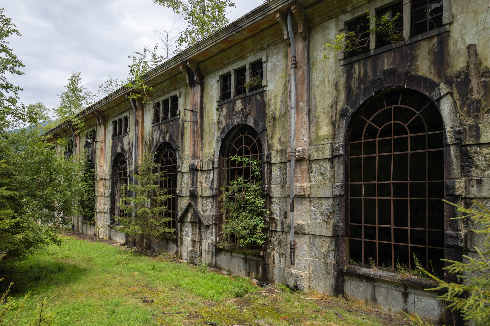

Deep in a valley of the Bergamo Alps in northern Italy lie two man-made reservoirs: Lake Poglia and Lake Arno. These two lakes are connected by a series of pipes, rivers, and buildings that lead down the mountainside, connecting two hydroelectric power plants over a 1,400-metre elevation drop.
I visited the higher of the two power plants on a cold and cloudly summer's day. Unlike the lower facility, which is still in operation, the higher Isola plant was decommissioned in 1973 following the launch of a larger and more advanced facility nearby. Since then, the Isola site has been left abandoned.
Much of the external infrastructure still remains today, as you can see in the above photos, with various locks and overflow channels surrounding the main building.

The main hall, once housing seven massive turbines, now stands hollow and weathered. Gone are half of the stairs, the entire railing, and all the light fixtures. Moss, dirt, and holes in the roof have moved in to replace them. Yet despite the decay, the room's grandeur persists, upheld in part by the metal-framed window panels and tall arched ceiling.
Historical photo
Turbine hall, date and author unknown via Terni Industrial Archaeology
When the Isola plant was completed in 1910, it was directly connected to the lower Cedegolo power station downstream. This design allowed the same water to generate electricity twice, first at higher Isola, then again at lower Cedegolo.
As time slowly degrades the buildings and nature reclaims the land, it remains uncertain what the future will bring. I was unable to find any information online about the plant's current owners or future plans, but signs of ongoing maintenance were evident. Securely locked gates hint at a quiet and unseen caretaker.